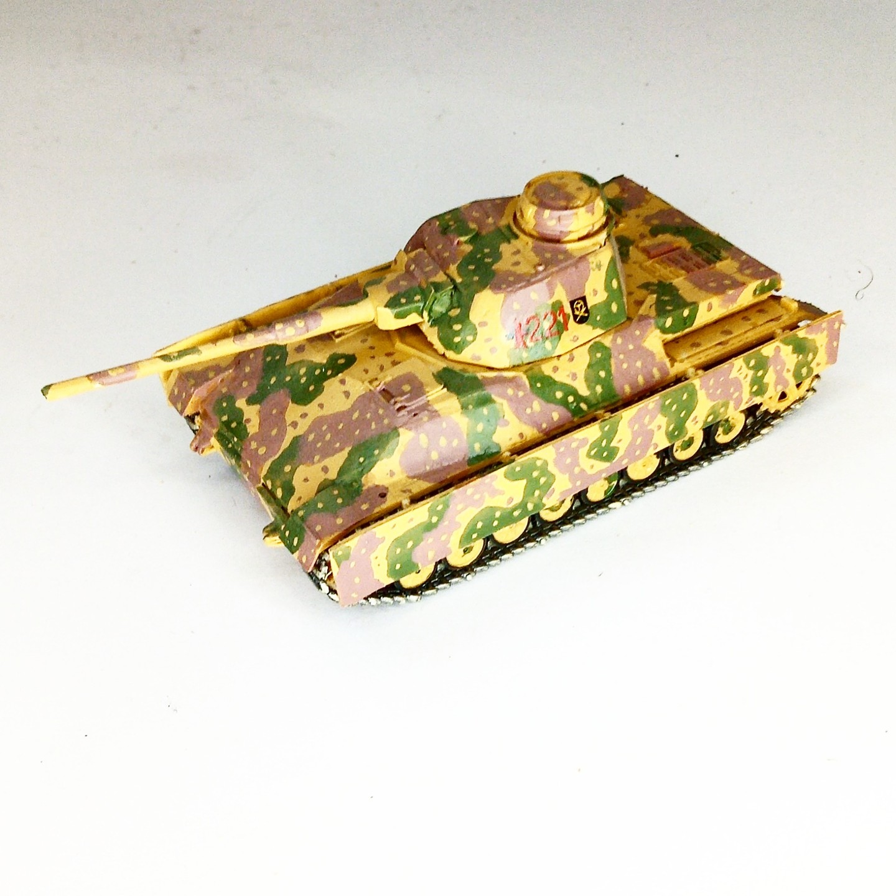

Mezzi militari · scale model archive
PzKpfW IV (Schräg)
PzKpfW IV (Schräg) — Kit: Conversion, Scale: 1/72. I wanted to check how a Pz IV with sloped armor would look like #1/72 #Conversion

Photo gallery
English description
I wanted to check how a Pz IV with sloped armor would look like
#1/72 #Conversion
Descrizione italiana
I wanted una check how una Pz IV con sloped armor would look like.